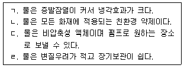
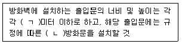
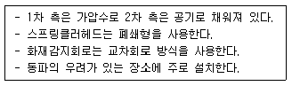
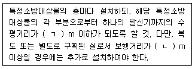

경비지도사-2차(소방학) (2015-11-21 기출문제)
1. 연소에 관한 설명으로 옳은 것은?
- 연소는 빛과 열을 수반하는 환원반응이다.
- 메탄(CH4)이 완전연소하면 물과 이산화탄소가 생성된다.
- 철과 산소가 결합하여 녹이 생기는 반응을 연소라 한다.
- 연소 중 산소가 부족하면 완전연소가 된다.
(정답률: 알수없음)

2. 가연물의 구비조건이 아닌 것은?
- 산소와 친화력이 클 것
- 활성화 에너지가 클 것
- 열전도도가 작을 것
- 발열량과 비표면적이 클 것
(정답률: 알수없음)
3. 기체의 주된 연소형태가 아닌 것은?
- 폭발연소
- 확산연소
- 표면연소
- 예혼합연소
(정답률: 알수없음)
4. 화재 시 발생되는 연소생성물의 특징에 관한 내용으로 옳은 것은?
- 염화수소는 철에 대한 부식성이 없다.
- 공기 중 농도 50 %이상의 이산화탄소는 인체에 무해하다.
- 일산화탄소는 무색, 무취의 유독성 기체이다.
- 포스겐은 염소계 화합물로 인체에는 큰 피해가 없다.
(정답률: 알수없음)
5. 산화열의 축적에 의해 자연발화의 위험성이 있는 것은?
- 대두유
- 활성탄
- 생석회
- 에틸알코올
(정답률: 알수없음)
6. 열전달의 형태 중 복사에 관한 설명으로 옳지 않은 것은?
- 두 물체 사이의 복사열은 매개체 없이 전자파 형태로 전달된다.
- 화재 시 비화나 화염의 영향 없이 인접한 건물로 연소가 확대되는 것도 복사에 의한 열전달 형태다.
- 뜨거운 커피잔 속에 스푼을 넣고 저을 때 스푼에 열이 전달되는 것도 복사에 의한 열전달 형태다.
- 두 물체 사이의 복사열은 절대온도 차의 4제곱에 비례한다.
(정답률: 알수없음)
7. 고층건축물화재 시 건축물 내부의 온도가 바깥보다 높고 밀도가 낮을 때 건물 내의 공기가 부력을 받아 이동하는 현상은?
- 굴뚝효과(stack effect)
- 플래쉬오버(flash over)
- 백드래프트(back draft)
- 롤오버(roll over)
(정답률: 알수없음)
8. 다음 위험물의 화재 시 소화방법으로 옳은 것은?
- 나트륨은 물로 냉각소화 한다.
- 유황은 소규모화재 시 마른모래로 질식소화 한다.
- 마그네슘은 이산화탄소로 질식소화 한다.
- 알루미늄분말은 물이나 포로 냉각소화 한다.
(정답률: 알수없음)
9. 위험물안전관리법령상 위험물품명과 지정수량의 연결이 옳지 않은 것은?
- 칼륨 - 10 kg
- 황린 - 20 kg
- 알칼리금속 - 50 kg
- 알킬알루미늄 - 300 kg
(정답률: 알수없음)
10. 화재 시 가연물질 주변의 산소농도를 낮추어 소화하는 방법은?
- 냉각소화
- 질식소화
- 부촉매소화
- 제거소화
(정답률: 알수없음)
11. 소화약제로 사용되는 물의 특징으로 옳은 것을 모두 고른 것은?

- ㄱ, ㄴ
- ㄴ, ㄷ
- ㄱ, ㄷ, ㄹ
- ㄴ, ㄷ, ㄹ
(정답률: 알수없음)
12. 다음 중 불연성가스가 아닌 것은?
- 헬륨
- 황화수소
- 아르곤
- 이산화탄소
(정답률: 알수없음)
13. 할로겐화합물 청정소화약제가 아닌 것은? (문제 오류로 실제 시험에서는 1, 4번이 정답처리 되었습니다. 여기서는 1번을 누르면 정답 처리 됩니다.)
- IG-100
- FC-3-1-10
- HCFC-124
- FIC-1311
(정답률: 알수없음)
14. 소화기구의 소화약제 중 가스계 소화약제가 아닌 것은?
- 이산화탄소소화약제
- 할로겐화물소화약제
- 청정소화약제
- 산알칼리소화약제
(정답률: 알수없음)
15. 화재의 분류, 표시색상과 소화약제가 순서대로 바르게 짝지어진 것은?
- 일반화재 - 황색 - 이산화탄소
- 유류화재 - 황색 - 포
- 전기화재 - 적색 - 물
- 금속화재 - 적색 - 물
(정답률: 알수없음)
16. 유류탱크 화재 시 유류저장탱크 바닥에 찌꺼기와 함께 있는 물이 끓어 수분의 급격한 부피팽창에 의해 기름이 넘치는 현상은?
- 보일오버(boil over)
- 슬롭오버(slop over)
- 블레비(BLEVE)
- 링파이어(ring fire)
(정답률: 알수없음)
17. 소방시설 설치ㆍ유지 및 안전관리에 관한 법령상 소방시설등의 자체점검 중 작동기능점검에 관한 설명으로 옳지 않은 것은?
- 작동기능점검에는 방수압력측정계, 열감지기시험기 등의 점검장비가 필요하다.
- 작동기능점검은 소방안전관리자가 점검할 수 있다.
- 작동기능점검은 2년마다 1회 실시한다.
- 작동기능점검은 소방시설등을 인위적으로 조작하여 정상적으로 작동하는지를 점검하는 것이다.
(정답률: 알수없음)
18. 건축물의 피난ㆍ방화구조 등의 기준에 관한 규칙상 내화구조의 내력벽 중 철근콘크리트조의 두께기준은?
- 3 cm 미만
- 5 cm이상
- 7 cm미만
- 10 cm 이상
(정답률: 알수없음)
19. 건축물의 피난ㆍ방화구조 등의 기준에 관한 규칙상 건축물에 설치하는 방화벽에 관한 기준이다. ( )안에 알맞은 것은?

- ㄱ: 2.5, ㄴ: 갑종
- ㄱ: 2.5, ㄴ: 을종
- ㄱ: 3.0, ㄴ: 갑종
- ㄱ: 3.0, ㄴ: 을종
(정답률: 알수없음)
20. 건축물의 피난계획에 관한 일반적인 원칙으로 옳은 것은?
- 피난동선은 1방향으로만 해야 한다.
- 피난경로는 단순명료하게 한다.
- 피난설비는 이동식을 원칙으로 한다.
- 피난수단은 복잡한 구조의 첨단장비를 사용한다.
(정답률: 알수없음)
21. LNG 및 LPG에 관한 설명으로 옳은 것은?
- LPG용 가스 탐지(검지)부는 천장 쪽에 설치한다.
- LNG가 LPG보다 액화하기 쉽다.
- LPG의 주성분은 프로판(C3H8)이다.
- LNG의 주성분은 에탄(C2H6)이다.
(정답률: 알수없음)
22. 다음 중 분진폭발의 위험성이 없는 것은?
- 밀가루
- 석탄가루
- 산화칼슘(생석회) 분말
- 알루미늄 분말
(정답률: 알수없음)
23. 화재안전기준(NFSC)상 자동소화장치에 관한 내용으로 가연성가스 등의 누출을 자동으로 차단하며, 소화약제를 방사하여 소화하는 장치는?
- 캐비넷형 자동소화장치
- 분말식 자동소화장치
- 고체에어로졸식 자동소화장치
- 주방용 자동소화장치
(정답률: 알수없음)
24. 옥내소화전설비의 구성요소가 아닌 것은?
- 가압송수장치
- 배관
- 수원
- 유수검지장치
(정답률: 알수없음)
25. 다음에서 설명하는 스프링클러소화설비는?

- 일제살수식스프링클러
- 습식스프링클러
- 건식스프링클러
- 준비작동식스프링클러
(정답률: 알수없음)
26. 화재안전기준(NFSC)상 이산화탄소 소화약제 저장용기에 관한 내용으로 옳지 않은 것은?
- 방화문으로 구획된 실에 설치한다.
- 온도가 40 ℃이하이고, 온도변화가 적은 곳에 설치한다.
- 직사광선 및 빗물이 침투할 우려가 없는 곳에 설치한다.
- 용기 간의 간격은 점검에 지장이 없도록 1 cm의 간격을 유지한다.
(정답률: 알수없음)
27. 자동화재탐지설비와 연동으로 작동하여 자동적으로 화재발생 상황을 소방관서에 전달하는 설비는?
- 비상경보설비
- 비상방송설비
- 자동화재속보설비
- 누전경보기
(정답률: 알수없음)
28. 화재안전기준(NFSC)상 화재 감지기의 부착 높이가 20 m 이상인 장소에 설치할 수 있는 감지기는?
- 차동식분포형감지기
- 불꽃감지기
- 보상식스포트형감지기
- 열연기복합형감지기
(정답률: 알수없음)
29. 자동화재탐지설비의 구성요소가 아닌 것은?
- 유도등
- 수신기
- 음향장치
- 중계기
(정답률: 알수없음)
30. 화재안전기준(NFSC)상 경계전로의 정격전류가 60 A를 초과하는 경우에 설치하는 누전경보기는?
- 1급 누전경보기
- 2급 누전경보기
- 3급 누전경보기
- 4급 누전경보기
(정답률: 알수없음)
31. 화재안전기준(NFSC)상 자동화재탐지설비의 발신기에 관한 설치기준이다. ( ) 안에 알맞은 것은?

- ㄱ: 20, ㄴ: 40
- ㄱ: 20, ㄴ: 50
- ㄱ: 25, ㄴ: 40
- ㄱ: 25, ㄴ: 50
(정답률: 알수없음)
32. 화재안전기준(NFSC)상 청각장애인용 시각경보장치의 설치기준으로 옳지 않은 것은?
- 복도ㆍ통로ㆍ청각장애인용 객실 및 공용으로 사용하는 거실에 설치하며, 각 부분으로부터 유효하게 경보를 발할 수 있는 위치에 설치한다.
- 공연장ㆍ집회장ㆍ관람장 또는 이와 유사한 장소에 설치하는 경우에는 시선이 집중되는 무대부 부분 등에 설치한다.
- 천장높이가 3 m인 장소에 설치 할 경우 설치높이는 바닥으로부터 1.0 m 이상 1.5m 이하의 장소에 설치한다.
- 시각경보장치의 광원은 전용의 축전지설비에 의하여 점등되도록 설치한다.
(정답률: 알수없음)
33. 화재안전기준(NFSC)상 피난기구에 관한 설명으로 옳지 않은 것은?
- 완강기는 사용자의 몸무게에 따라 자동적으로 내려올 수 있는 기구 중 사용자가 교대하여 연속적으로 사용할 수 있는 것을 말한다.
- 구조대는 화재 발생 시 사람이 건축물 내에서 외부로 긴급히 뛰어 내릴 때 충격을 흡수하여 안전하게 지상에 도달할 수 있도록 포지에 공기 등을 주입하는 구조로 되어 있는 것을 말한다.
- 피난사다리는 화재 시 긴급대피를 위해 사용하는 사다리를 말한다.
- 승강식피난기는 사용자의 몸무게에 의하여 자동으로 하강하고 내려서면 스스로 상승하여 연속적으로 사용할 수 있는 무동력 승강식피난기를 말한다.
(정답률: 알수없음)
34. 화재안전기준(NFSC)상 복도통로유도등은 보행거리 몇 미터(m) 마다 설치하여야 하는가?
- 20 m
- 30 m
- 40 m
- 50 m
(정답률: 알수없음)
35. 화재안전기준(NFSC)상 인명구조기구의 종류가 아닌 것은?
- 구조대
- 방열복
- 인공소생기
- 공기호흡기
(정답률: 알수없음)
36. 화재안전기준(NFSC)상 연면적 3,500m2, 지하 1층 지상 7층인 특정소방대상물의 지상 1층에서 화재가 발생하였다. 이 때 지구음향장치의 우선경보가 동시에 발하지 않는 층은?
- 지하 1층
- 지상 1층
- 지상 2층
- 지상 3층
(정답률: 알수없음)
37. 소방기본법에서 정하는 소방대가 아닌 것은?
- 소방공무원
- 자위소방대원
- 의용소방대원
- 의무소방원
(정답률: 알수없음)
38. 소방기본법령상 화재예방, 소방활동 또는 소방훈련을 위하여 사용되는 소방신호의 종류가 아닌 것은?
- 경계신호
- 발화신호
- 해제신호
- 복귀신호
(정답률: 알수없음)
39. 위험물안전관리법상 위험물을 제조할 목적으로 지정수량 이상의 위험물을 취급하기 위하여 허가를 받은 장소는?
- 제조소
- 저장소
- 주유취급소
- 판매취급소
(정답률: 알수없음)
40. 다음 중 제2류 위험물인 것은?
- 황화린
- 질산
- 등유
- 아세톤
(정답률: 알수없음)